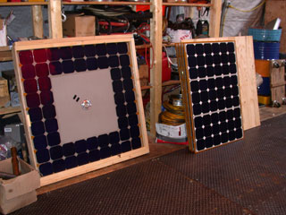
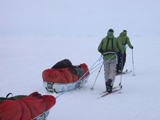

| |<< |< July 28, 2005 >| >>| | |
|
Things were up and down today again. Mostly up. We put the rest of the robot together - primarily the panel box, so that the robot will be driving around it's full weight. We had to bore a sizeable hole into the roof of the chassis to accomodate a bunch of wires that don't need to be threaded all the way up the mast to the top of the panel. Things like the wires that connect the solar panels to the power system. After lunch we took it for a spin. The snow conditions were, if anything, more difficult than anything we would encounter in Antarctica. There was, like yesterday, a hard crust beneath 3-4 inches of powdery snow. Jim and I would break through that crust and sink a few more inches; the robot just rode over it. That is not to say that it drove easily, a lot of the time it had to pull some serious power, and chewed up the snow beneath it in order to make headway. But, aside from one occassion where we tried to drive it up a large and steep embankment, it was able to handle everything we threw at it. The radio communications, which I tinkered with some yesterday, were behaving themselves a bit better today, but not perfectly. Flush with that success, we took the robot over to the skiway - the long flat runway of packed and groomed snow that the airplanes land on. We went out about few hundred meters, perhaps a kilometer, then headed back. The going was, naturally, much easier. Just to put things into a bit of perspective - while we required upwards of 200 W of power to operate in the powder, our power needs were only about half that on the hardpack runway. The preliminary results suggest that our rolling resistance on hardpack is about 0.09, while the powdery snow was closer to 0.24. Not only are these results encouraging in terms of our ultimate energy requirements in Antarctica, but they are almost a spot on match with our design assumptions (read: educated guesses) at the start of the project. There were two flights today, which has removed much cargo and many people, such that we now number 22 at Summit, instead of the 50+ we were this morning. The place is eerily quiet and empty as a result. It's kind a nice, actually, for it to be quiet around here. Jim and I have made a number of contacts among the people who just left, and those who are still here. Not necessarily future collaborators; at least, not yet. But, a number of people who think this is pretty neat. Since we have set up shop in the garage, we've had a lot of interested visitors and onlookers. And, whenever we have the robot out driving around, people always notice. I can hardly blame them - it really is a sight. [no pictures of the robot driving around today - I was too busy doing the driving to take any, and I haven't gotten what's on Jim's camera yet] We also said goodbye this morning to two Swedes who had been camping here for the past few days. I may have mentioned them: they are attempting a south-to-north traverse of Greenland. They've done east to west, and west to east, already before. They've encountered difficult conditions thus far, and it's taken them nearly twice as long as planned to cover the 1300 km from the southern tip to Summit. As a result, they'll have to cut their trip a little short, and aim for the NW coast instead of the very northern point. They've got about 500 km to go, downhill now that they've passed Summit, and plan on taking some 3-4 weeks to do it. Lots of luck to them! --Alex Streeter |
|
|  |  |
| The panels have survived their journey of 2500 miles intact and ready for action. |
Only 500 km of flat white left to go. Good luck! |
| |<< |< July 28, 2005 >| >>| | |
| [Main] | [Mission] | [Design] | [Science] | [Papers] | [Pictures] | [Team] |
|
Last Updated on 10/20/2005 by Streeter
Site © Thayer School of Engineering, Dartmouth College, Hanover, N.H. |